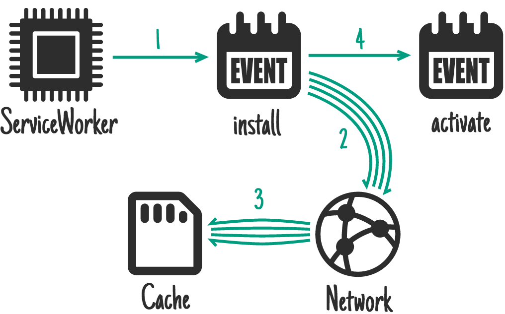
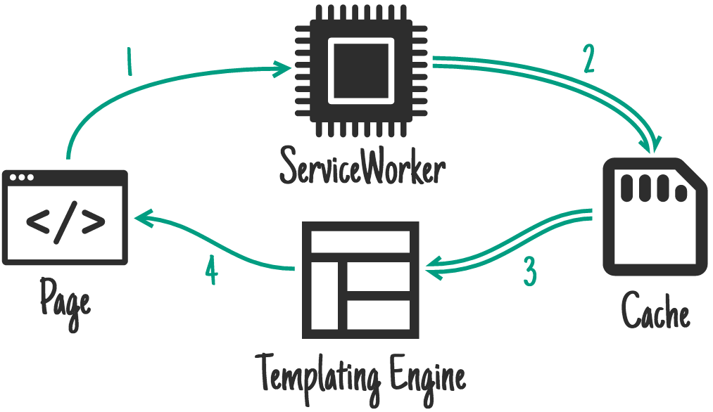
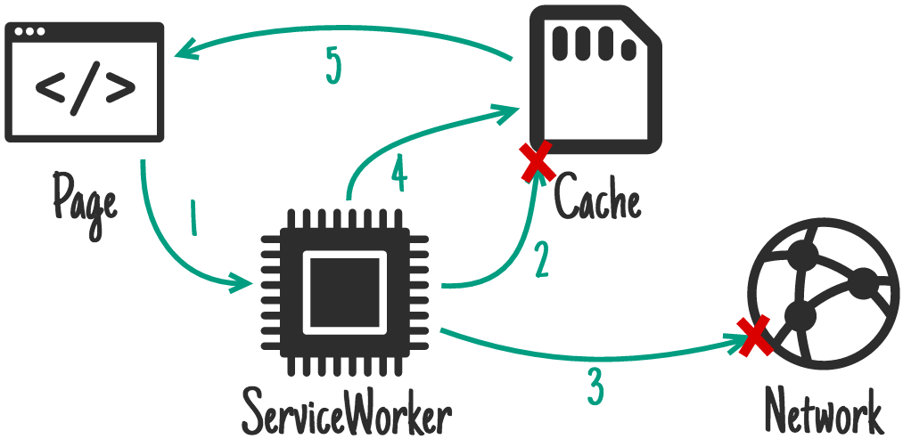
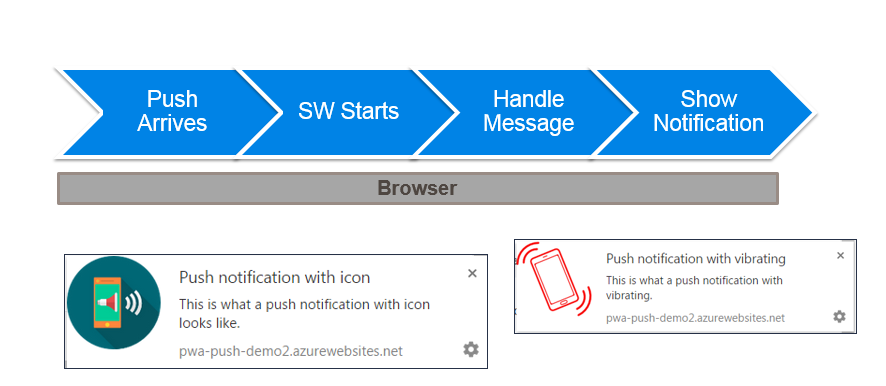

<!DOCTYPE html>
<html>
  <head>
    <title>Introduction to PWA</title>
    <meta charset="utf-8">
    <meta name="author" content=" Marek Matczak, Paweł Kamiński, Bartek Pietrowski, Tomek Szewców">
    <meta name="description" content="WKS 2017 Traning">
    <meta name="viewport" content="width=device-width, initial-scale=1.0, maximum-scale=1.0, user-scalable=no, minimal-ui">
    <link href="reveal.js-3.3.0/css/reveal.css" rel="stylesheet">
    <link href="reveal.js-3.3.0/css/theme/black.css" rel="stylesheet">
    <link href="common/css/common.css" rel="stylesheet">
    <link href="style.css" rel="stylesheet"><!-- Theme used for syntax highlighting of code -->
    <link href="reveal.js-3.3.0/lib/css/zenburn.css" rel="stylesheet">
    <script>
      var link = document.createElement( 'link' );
      link.rel = 'stylesheet';
      link.type = 'text/css';
      link.href = window.location.search.match( /print-pdf/gi ) ? 'reveal.js-3.3.0/css/print/pdf.css' : 'reveal.js-3.3.0/css/print/paper.css';
      document.getElementsByTagName( 'head' )[0].appendChild( link );
      
      
      
    </script>
  </head>
</html>
<body>
  <div class="reveal">
    <div class="slides">       
      <section id="0-title" data-transition="slide">
        <h2>Introduction to<br>Progressive Web Apps</h2>
        <body> </body>
      </section>
      <section id="1-agenda" data-transition="slide">
        <h2>Agenda</h2>
        <body>
          <table> 
            <tr>
              <td class="fragment">
                <ul>
                  <li class="fragment">Introduction</li>
                  <li class="fragment">Service Workers</li>
                  <li class="fragment">Caching options</li>
                  <li class="fragment">Storage</li>
                  <li class="fragment">Push Notification</li>
                  <li class="fragment">Tooling                        </li>
                </ul>
              </td>
            </tr>
          </table>
        </body>
      </section>
      <section id="2-current-mobile-web" data-transition="slide">
        <h2>Current State of Mobile Web</h2>
        <body>
          <ul>
            <li class="fragment">Responsive Web Design  </li>
            <li class="fragment">Mobile first</li>
            <li class="fragment">Mobile version of web page</li>
          </ul>
        </body>
      </section>
      <section id="3-2017-not-enough" data-transition="slide">
        <h2>in 2017 it's not enough...</h2>
        <body>
          <table> 
            <tr>
              <td class="fragment">
                <h4>We want to web apps that </h4>
                <ul>
                  <li>always work despite of conectivity<br>status</li>
                  <li>reduce loading time</li>
                  <li>are proactive        </li>
                </ul>
              </td>
              <td class="fragment">
                <h4>in marketing jargon</h4>
                <ul>           
                  <li>Reliable                                          </li>
                  <li>Fast </li>
                  <li>Engaging </li>
                </ul>
              </td>
            </tr>
          </table>
          <div class="fragment"></div>
        </body>
      </section>
      <section id="4-progressive-web-apps" data-transition="slide">
        <h2>Progressive Web Apps</h2>
        <body>
          <ul class="fragment">
            <li>is a new way to deliver amazing user experiences on the web. <span class="credits ml30"><a href="https://developers.google.com/web/progressive-web-apps/?hl=en"> Google    </a></span></li>
            <li>is term used to denote a new software development methodology. Unlike traditional applications, progressive web apps are a hybrid of regular web pages (or websites) and a mobile application (...).<span class="credits ml30"><a href="https://en.wikipedia.org/wiki/Progressive_web_app">Wikipedia    </a></span></li>
            <li> are like good old web sites but better. In a modern browser they exhibit super–powers<span class="credits ml30"><a href="https://developer.mozilla.org/en-US/Apps/Progressive">Mozilla    </a></span></li>
          </ul>
        </body>
      </section>
      <section id="5-why-should-we-care" data-transition="slide">
        <h2>Why should we care  </h2>
        <body>
          <p class="fragment">Nine talks during Google I/0 2016  and seven during Google I/O 2017       </p>
          <div class="fragment">       
            <p class="quote">picture taken from  <a href="https://youtu.be/U52dD0tegsA?t=282">Building Progressive Web Apps Today (Chrome Dev Summit 2016) Video       </a></p>
          </div>
        </body>
      </section>
      <section id="6-pwa-components" data-transition="slide">
        <h2> PWA Components</h2>
        <body>
          <ul>
            <li class="fragment">Service Worker  </li>
            <li class="fragment">manifest.json </li>
            <li class="fragment">app shell</li>
          </ul>
        </body>
      </section>
      <section id="7-pwa-sw" data-transition="slide">
        <h2> Service Worker</h2>
        <body>
          <div class="fragment">
            <p class="just">
              A service worker is a script that your browser runs in the background, separate from a web page, opening the door to features that don't need a web page or user interaction. 
              Today, they already include features like <strong> </strong>push notifications 
              and <strong> </strong>background sync. 
              In the future service workers will support other things like periodic sync or geofencing.
            </p><span class="small"><a href="https://developers.google.com/web/fundamentals/getting-started/primers/service-workers"> Developers Google     </a></span>
          </div>
        </body>
      </section>
      <section id="8-manifest" data-transition="slide">
        <h2>manifest.json</h2>
        <body>
          <pre><code class="json small"> {
   "short_name": "AirHorner",
   "name": "Kinlan's AirHorner of Infamy",
   "icons": [{                 
          "src": "launcher-icon-1x.png",
          "type": "image/png",
          "sizes": "48x48"
          },                        
          {
           "src": "launcher-icon-4x.png",
           "type": "image/png",
           "sizes": "192x192"
          }],                
   "start_url": "index.html?launcher=true"
}             </code></pre>
        </body>
      </section>
      <section id="9-app-shell" data-transition="slide">
        <h2> App shell</h2>
        <body>
          <p class="just">An application shell (or app shell) architecture is one way to build a Progressive Web App that reliably and instantly loads on your users' screens, similar to what you see in native applications.</p>
          <p class="just">The app "shell" is the minimal HTML, CSS and JavaScript required to power the user interface and when cached offline can ensure instant, reliably good performance to users on repeat visits. This means the application shell is not loaded from the network every time the user visits. Only the necessary content is needed from the network.</p><span class="small"><a href="https://developers.google.com/web/fundamentals/architecture/app-shell">Developers Google     </a></span>
        </body>
      </section>
      <section id="10-summary" data-transition="slide">
        <h2>Long Story Short</h2>
        <body>
          <h3>Progressive Web Apps are</h3>
          <ul>
            <li class="fragment">websites / webapps</li>
            <li class="fragment">with some new features </li>
            <li class="fragment">with mobile App use and feel</li>
            <li class="fragment">framework agnostic</li>
          </ul>
        </body>
      </section>
      <section id="11-pwa-example" data-transition="slide">
        <h2> Example</h2>
        <body>
          <p class="quote">taken from  <a href="https://developer.mozilla.org/en-US/Apps/Progressive">gossiplus.com    </a></p>
        </body>
      </section>
      <section id="12-sw-in-details" data-transition="slide">
        <h2> </h2>
        <body>
          <h2>Closer look to Service Workers</h2>
        </body>
      </section>
      <section id="13-workers" data-transition="slide">
        <h2> Workers</h2>
        <body>
          <ul>
            <li>Isolated thread</li>
            <li>Code contained in separate file (async download)</li>
            <li>Communication via message passing - postMessage()</li>
            <li>Messages copied, not shared</li>
            <li>Same Origin</li>
          </ul>
        </body>
      </section>
      <section id="14-workers-code" data-transition="slide">
        <h2> worker example</h2>
        <body>
          <p>
             main.js</p>
          <pre><code class="JavaScript">    var worker = new Worker('task.js');
    worker.addEventListener('message', function(e) {
    console.log('Worker said: ', e.data);
    }, false);

    worker.addEventListener('error', function(e){
    console.log('ERROR: Line', e.lineno, 'in', 
      e.filename, ':', e.message);
    }, false);

    worker.postMessage('Hello World'); // Send data to our worker.</code></pre>
          <p>task.js </p>
          <pre><code class="JavaScript">    self.addEventListener('message', function(e) {
        self.postMessage(e.data);
     }, false);     </code></pre>
        </body>
      </section>
      <section id="15-workers-can" data-transition="slide">
        <h2> Features Available to Workers</h2>
        <body>
          <ul>
            <li>The navigator object</li>
            <li>The location object (read-only)</li>
            <li>XMLHttpRequest</li>
            <li>setTimeout()/clearTimeout() and setInterval()/clearInterval()</li>
            <li>The Application Cache</li>
            <li>Importing external scripts using the importScripts() method</li>
            <li>Spawning other web workers</li>
          </ul>
        </body>
      </section>
      <section id="16-workers-cannot" data-transition="slide">
        <h2>Workers do NOT have access to:</h2>
        <body>
          <ul>
            <li>The DOM (it's not thread-safe)</li>
            <li>The window object</li>
            <li>The document object</li>
            <li>The parent object</li>
            <li>will not run locally (e.g. from file://)</li>
          </ul>
        </body>
      </section>
      <section id="17-service-workers" data-transition="slide">
        <h2> Service Workers</h2>
        <body>
          <ul>
            <li>Give developers the moving parts to solve their problems</li>
            <li>Alow to create own caching patterns</li>
            <li>Can only be used over HTTPS (excluding localhost)  </li>
            <li>Hijack connections</li>
            <li>Fabricate, and filter responses</li>
          </ul>
        </body>
      </section>
      <section id="18-can-I-use-sw" data-transition="slide">
        <h2>Can I use Service Workers</h2>
        <body>
          <p class="quote"><a href="http://caniuse.com/#search=service%20Worker"> Can I use</a></p>
        </body>
      </section>
      <section id="19-is-sw-ready" data-transition="slide">
        <h2>Is Service Worker ready</h2>
        <body>
          <p class="quote"><a href="https://jakearchibald.github.io/isserviceworkerready/"> Is Service Worker ready</a></p>
        </body>
      </section>
      <section id="20-service-workers-life-cycle" data-transition="slide">
        <h2>Service Worker Life Cycle </h2>
        <body>
          <p><a class="credits" href="https://developers.google.com/web/fundamentals/getting-started/primers/service-workers" target="_blank">Image from Google Web Fundamentals</a></p>
        </body>
      </section>
      <section id="21-service-workers-registeration" data-transition="slide">
        <h2>Service Worker Registeration</h2>
        <body>
          <pre><code class="JavaScript"> if ('serviceWorker' in navigator) {
    navigator.serviceWorker.register('/sw.js')
     .then(function(registration) {
       // Registration was successful 
       console.log('Registration successful with scope:', registration.scope);
      }).catch(function(err) {
       // Registration failed 
      console.log('ServiceWorker registration failed:', err);
    });
}</code></pre>
          <p><a class="credits" href="https://developers.google.com/web/fundamentals/getting-started/primers/service-workers" target="_blank">Code from Google Web Fundamentals  </a></p>
        </body>
      </section>
      <section id="22-service-workers-installation" data-transition="slide">
        <h2>Service Worker Installation</h2>
        <body>
          <pre><code class="JavaScript"> self.addEventListener('install', function(event) {
// Perform install steps
});</code></pre>
          <p><a class="credits" href="https://developers.google.com/web/fundamentals/getting-started/primers/service-workers" target="_blank">Code from Google Web Fundamentals  </a></p>
        </body>
      </section>
      <section id="23-service-workers-caching-static-files" data-transition="slide">
        <h2> Caching Static Files</h2>
        <body>
          <pre><code class="JavaScript"> self.addEventListener('install', function(event) {
  event.waitUntil(
    caches.open('mysite-static-v3').then(function(cache) {
      return cache.addAll([
        '/css/whatever-v3.css',
        '/css/imgs/sprites-v6.png',
        '/css/fonts/whatever-v8.woff',
        '/js/all-min-v4.js'
        // etc
      ]);
    })
  );
});</code></pre>
          <p><a class="credits" href="https://developers.google.com/web/fundamentals/getting-started/primers/service-workers" target="_blank">Code from Google Web Fundamentals  </a></p>
        </body>
      </section>
      <section id="24-service-workers-caching-static-files-schema" data-transition="slide">
        <h2> Caching Static Files</h2>
        <body>
          <p><a class="credits" href="https://developers.google.com/web/fundamentals/instant-and-offline/offline-cookbook/" target="_blank">Image from Jake Archibald`s offline cookbook</a></p>
        </body>
      </section>
      <section id="25-service-workers-fetching-static-files" data-transition="slide">
        <h2> Fetching Static Files</h2>
        <body>
          <pre><code class="JavaScript"> self.addEventListener('fetch', function(event) {
    event.respondWith(
      caches.open('mysite-static-v3').then(function(cache) {
        cache.match(event.request)
           .then(function(response) {
              return response || fetch(event.request)           
          })
       );                   
    });
});</code></pre>
          <p><a class="credits" href="https://developers.google.com/web/fundamentals/instant-and-offline/offline-cookbook/" target="_blank">Code based on Jake Archibald`s offline cookbook</a></p>
        </body>
      </section>
      <section id="26-cache-first" data-transition="slide">
        <h2> Cache First</h2>
        <body>
          <p><a class="credits" href="https://developers.google.com/web/fundamentals/instant-and-offline/offline-cookbook/" target="_blank">Image from Jake Archibald`s offline cookbook</a></p>
        </body>
      </section>
      <section id="27-service-workers-caching-on-network-response" data-transition="slide">
        <h2> Caching On Network Response</h2>
        <body>
          <pre><code class="JavaScript"> self.addEventListener('fetch', function(event) {
   event.respondWith(
       caches.open('mysite-dynamic').then(function(cache) {
          return cache.match(event.request).then(function (response) {
             return response || fetch(event.request).then(function(response) {
                  cache.put(event.request, response.clone());
                  return response;
                });
            });
        })
    );
});</code></pre>
          <p><a class="credits" href="https://developers.google.com/web/fundamentals/getting-started/primers/service-workers" target="_blank">Code from Google Web Fundamentals  </a></p>
        </body>
      </section>
      <section id="28-network-first" data-transition="slide">
        <h2> Network first</h2>
        <body>
          <p><a class="credits" href="https://developers.google.com/web/fundamentals/instant-and-offline/offline-cookbook/" target="_blank">Image from Jake Archibald`s offline cookbook</a></p>
        </body>
      </section>
      <section id="29-cache-first" data-transition="slide">
        <h2> Cache First</h2>
        <body>
          <p><a class="credits" href="https://developers.google.com/web/fundamentals/instant-and-offline/offline-cookbook/" target="_blank">Image from Jake Archibald`s offline cookbook</a></p>
        </body>
      </section>
      <section id="30-race" data-transition="slide">
        <h2> Race Cache and Network</h2>
        <body>
          <p><a class="credits" href="https://developers.google.com/web/fundamentals/instant-and-offline/offline-cookbook/" target="_blank">Image from Jake Archibald`s offline cookbook</a></p>
        </body>
      </section>
      <section id="31-cache-only" data-transition="slide">
        <h2> Cache only</h2>
        <body>
          <p><a class="credits" href="https://developers.google.com/web/fundamentals/instant-and-offline/offline-cookbook/" target="_blank">Image from Jake Archibald`s offline cookbook</a></p>
        </body>
      </section>
      <section id="32-network-only" data-transition="slide">
        <h2> Network only</h2>
        <body>
          <p><a class="credits" href="https://developers.google.com/web/fundamentals/instant-and-offline/offline-cookbook/" target="_blank">Image from Jake Archibald`s offline cookbook</a></p>
        </body>
      </section>
      <section id="33-sw-caching-strategies" data-transition="slide">
        <h2> Caching strategies</h2>
        <body>
          <div class="bgImages">     </div>
          <div class="overlay fragment">
            <ul>
              <li>There are many caching strategies</li>
              <li class="fragment"><a href="https://developers.google.com/web/fundamentals/instant-and-offline/offline-cookbook/" target="_blank">Jake Archibald`s The offline cookbook</a></li>
              <li class="fragment"><a href="https://github.com/GoogleChrome/sw-precache" target="_blank">SW-Precache</a></li>
              <li class="fragment"><a href="https://github.com/GoogleChrome/sw-toolbox" target="_blank">SW-Toolbox</a></li>
            </ul>
          </div>
        </body>
      </section>
      <section id="34-data" data-transition="slide">
        <h2> </h2>
        <body>
          <h2>Now lets talk about...<br>... data storage</h2>
        </body>
      </section>
      <section id="35-cookies" data-transition="slide">
        <h2>Cookies</h2>
        <body>
          <ul>
            <li class="fragment">Widely supported</li>
            <li class="fragment">
               Synchronous</li>
            <li class="fragment">
               Size limit: 4KB</li>
            <li class="fragment">
               Strings only</li>
            <li class="fragment">
               lives in document object -> inaccessible for service worker</li>
            <li class="fragment">
               Cleared very often                </li>
          </ul>
        </body>
      </section>
      <section id="36-html5-storage" data-transition="slide">
        <h2>HTML5 Storage   </h2>
        <body>
          <h2> </h2>
          <p>Local/Session storage</p>
          <ul>
            <li class="fragment">Widely supported</li>
            <li class="fragment">
               Synchronous</li>
            <li class="fragment">
               Size limit : 2,5 ~5 MB</li>
            <li class="fragment">
               Strings only</li>
            <li class="fragment">
               Unstructured data      </li>
            <li class="fragment">
               lives in document object -> inaccessible for service worker</li>
          </ul>
        </body>
      </section>
      <section id="37-websql" data-transition="slide">
        <h2>WebSQL </h2>
        <body>
          <ul>       
            <li class="fragment">
               Asynchronous</li>
            <li class="fragment">
               Size limit : 2,5 ~5 MB</li>
            <li class="fragment">
               Strings only</li>
            <li class="fragment">
               Pre defined schema  </li>
            <li class="fragment">
               Quick search</li>
            <li class="fragment red">Deprecated    </li>
          </ul>
        </body>
      </section>
      <section id="38-indexeddb" data-transition="slide">
        <h2>IndexedDB </h2>
        <body>
          <ul>
            <li class="fragment">
               Asynchronous (event-based)</li>
            <li class="fragment">
               Size limit : 10~20% of avaiable space</li>
            <li class="fragment">
               Supported by Service Workers</li>
            <li class="fragment">
               Complex Data Objects, Indexes, transactions, cursors            </li>
            <li class="fragment">
              "Worst API ever design in a history of computer science"            
              Jake Archibald at <a href="https://youtu.be/cmGr0RszHc8?t=1924"> Building offline-first PWA - Google I/O 2016</a>
            </li>
            <li class="fragment">Promise based wrappers localForage, idb, PouchDB </li>
          </ul>
        </body>
      </section>
      <section id="39-file-api" data-transition="slide">
        <h2>File system /File API.</h2>
        <body>
          <ul>
            <li>not yet widely supported</li>
            <li>specification in progress</li>
            <li> <a href="http://w3c.github.io/FileAPI">File Api specfication</a></li>
          </ul>
        </body>
      </section>
      <section id="40-notification" data-transition="slide">
        <h2>Notification</h2>
        <body></body>
      </section>
      <section id="41-engaging" data-transition="slide">
        <h2> Engaging  </h2>
        <body>
          <ul class="no-bullet">
            <li class="no-bullet"> </li>
            <li>Web Push Protocol</li>
            <li>Service Workers</li>
          </ul>
        </body>
      </section>
      <section id="42-how-does-it-work-client" data-transition="slide">
        <h2>How does it work?</h2>
        <body></body>
      </section>
      <section id="43-how-does-it-work-server" data-transition="slide">
        <h2>How does it work?</h2>
        <body></body>
      </section>
      <section id="44-how-does-it-work-browser" data-transition="slide">
        <h2>How does it work?</h2>
        <body></body>
      </section>
      <section id="45-subscribe" data-transition="slide">
        <h2> Subscribe</h2>
        <body>
          <pre><code class="JavaScript"> navigator.serviceWorker.register('sw.js')
     .then(function(swReg){               
	        swRegistration.pushManager.subscribe({
                          userVisibleOnly: true, 
                          applicationServerKey: PUBLIC_KEY})
     .then(function(subscription){                   	
		        console.log('User successfully subscribed');          
		        fetch('/registerSubscription', {
              method: 'POST',
              headers: { 'Content-Type': 'application/json' },
              body: JSON.stringify({
                subscription: SUBSCRIPTION_OBJ,
             })
       });          </code></pre>
        </body>
      </section>
      <section id="46-subscribe-obj" data-transition="slide">
        <h2> Subscribtion object</h2>
        <body></body>
      </section>
      <section id="47-show-notification" data-transition="slide">
        <h2> Showing notification</h2>
        <body>
          <pre><code class="JavaScript"> self.addEventListener('push', function(event) {
    var  data = event.data.json();
    event.waitUntil(   
       self.registration.showNotification(data.title, {
         body: data.body,
         icon: data.icon,
         vibrate: data.vibrate,
         actions: data.actions,
         requireInteraction: data.requireInteraction
      })
   );
});</code></pre>
        </body>
      </section>
      <section id="48-notification-schema" data-transition="slide">
        <h2>Notification schema</h2>
        <body></body>
      </section>
      <section id="49-notification-types" data-transition="slide">
        <h2>Notification types</h2>
        <body>
          <ul>
            <li class="fragment no-bullet">       </li>
            <li class="fragment no-bullet">            </li>
            <li class="fragment no-bullet">              </li>
            <li class="fragment no-bullet">              </li>
          </ul>
        </body>
      </section>
      <section id="50-notification-demo" data-transition="slide">
        <h2> Demo</h2>
        <body>
          <p class="credits">Demo was created by  Mietek Suska and Mathias Kegelmann</p>
          <ul>  
            <li class="fragment"><a href="https://pwa-push-demo2.azurewebsites.net/" target="_blank">Client</a></li>
            <li class="fragment"><a href="https://pwa-push-demo2.azurewebsites.net/web_app/index.html" target="_blank">Server</a></li>
            <li class="fragment"><a href="https://github.com/apps-evolve-summit/pwa-push-demo" target="_blank">Github   </a></li>
          </ul>
        </body>
      </section>
      <section id="51-pwa-tools" data-transition="slide">
        <h2> </h2>
        <body>
          <h2>PWA tools         </h2>
        </body>
      </section>
      <section id="52-chrome-dev-tools" data-transition="slide">
        <h2> Chrome Dev Tools</h2>
        <body>
          <h3>
             Application tab</h3>
        </body>
      </section>
      <section id="53-chrome-dev-tools-manifest" data-transition="slide">
        <h2> Chrome Dev Tools</h2>
        <body></body>
      </section>
      <section id="54-chrome-dev-tools-service-worker" data-transition="slide">
        <h2> Chrome Dev Tools</h2>
        <body></body>
      </section>
      <section id="55-chrome-dev-tools-storage" data-transition="slide">
        <h2> Chrome Dev Tools</h2>
        <body></body>
      </section>
      <section id="56-chrome-dev-tools-cache" data-transition="slide">
        <h2> Chrome Dev Tools</h2>
        <body></body>
      </section>
      <section id="57-Lighthouse" data-transition="slide">
        <h2> Lighthouse</h2>
        <body>
          <p><a href="https://developers.google.com/web/tools/lighthouse/" target="_blank"></a></p>
          <ul>
            <li class="fragment">
                         Chrome plugin or cmd line tool</li>
            <li class="fragment">Perform static as well as runtime analyze</li>
            <li class="fragment">Check best practices Performance and Accessiblity related to Progressive Web Apps</li>
          </ul>
        </body>
      </section>
      <section id="58-Lighthouse-raport-pwa" data-transition="slide">
        <h2> Lighthouse</h2>
        <body></body>
      </section>
      <section id="59-Lighthouse-raport-performance" data-transition="slide">
        <h2> Lighthouse</h2>
        <body></body>
      </section>
      <section id="60-Lighthouse-raport-accessibility" data-transition="slide">
        <h2> Lighthouse</h2>
        <body></body>
      </section>
      <section id="61-sw-toolbox" data-transition="slide">
        <h2> SW-toolbox</h2>
        <body>
          <p><a href="https://github.com/GoogleChrome/sw-toolbox" target="_blank">Github</a></p>
          <ul> 
            <li class="fragment">A collection of service worker tools for offlining runtime requests</li>
            <li class="fragment">runtime tool                            </li>
            <li class="fragment">Provides predefined cache strategies</li>
            <li class="fragment">Allows adding new cache strategies</li>
          </ul>
        </body>
      </section>
      <section id="62-sw-toolbox-code" data-transition="slide">
        <h2> SW-toolbox</h2>
        <body>
          <pre><code class="JavaScript">                              
toolbox.router.get('/news', toolbox.networkFirst, {
    cache: {
        name: 'news'
    }
});               </code></pre>
          <pre><code class="JavaScript"> toolbox.router.get('/(google*)', global.toolbox.cacheFirst, {
    cache: {
      name: 'googleapis',
      maxEntries: 10,
      maxAgeSeconds: 86400
    },
    origin: /\.googleapis\.com$/
  });      </code></pre>
        </body>
      </section>
      <section id="63-sw-precache" data-transition="slide">
        <h2> SW-precache</h2>
        <body>
          <p><a href="https://github.com/GoogleChrome/sw-precache" target="_blank">Github</a></p>
          <ul>
            <li class="fragment">generates service worker code that will precache specific resources so they work offline.</li>
            <li class="fragment">buildtime tool                            </li>
            <li class="fragment">makes managing PWA cache easier</li>
            <li class="fragment">integrates with sw-toolbox  </li>
          </ul>
        </body>
      </section>
      <section id="64-sw-precache-code" data-transition="slide">
        <h2> SW-precache</h2>
        <body>
          <pre><code class="JavaScript"> workboxSW.precache([
  {
    "url": "/rev/js/app-dbf8692027.js",
    "revision": "dbf8692027bc45c0716e99ce79b5c37f"
  },
  ...
  {
    "url": "/images/icon.png",
    "revision": "a10e1fffc6618c914c42a754f3e713af"
  },
  {
    "url": "/app-shell",
    "revision": "2b927fa96213157612381879d94baf6a"
  }
]);</code></pre>
        </body>
      </section>
      <section id="65-more-tools" data-transition="slide">
        <h2> and many more tools like</h2>
        <body>
          <ul>  
            <li class="fragment"><a href="https://app-manifest.firebaseapp.com/" target="_blank">Manifest generator </a></li>
            <li class="fragment"><a href="https://www.npmjs.com/package/sw-offline-google-analytics" target="_blank">Offline Google Analitics</a></li>
            <li class="fragment"><a href="https://workboxjs.org/#get-started" target="_blank">Workboxjs   </a></li>
          </ul>
        </body>
      </section>
      <section id="66-end" data-transition="slide">
        <h2></h2>
        <body></body>
      </section>
    </div>
  </div>
  <script src="reveal.js-3.3.0/lib/js/head.min.js"></script>
  <script src="reveal.js-3.3.0/js/reveal.js"></script>
  <script>
     Reveal.initialize({
      // controls: true,
     //  progress: true,
       history: true,
     //  center: true,
     //  rollingLinks: true,
    //   transition: "convex",
       //- width: "90%",
       //- height: 1.0,
       dependencies: [
         // Syntax highlight for <code> elements
           {src: 'reveal.js-3.3.0/plugin/markdown/marked.js'},
           {src: 'reveal.js-3.3.0/plugin/markdown/markdown.js'},
           {src: 'reveal.js-3.3.0/plugin/notes/notes.js', async: true},
           { src: 'reveal.js-3.3.0/plugin/highlight/highlight.js', async: true, callback: function() { hljs.initHighlightingOnLoad(); } },         
       ]
     });
  </script>
</body>